![]()
Loading required package: terraterra 1.7.46
Attaching package: 'terra'The following object is masked from 'package:cartography':
north
One of the possible option of the Worldregio project is to propose methods of regionalization based on the division of a network of states into sub-networks (components) according to a dual criteria :
The definition of a geopolitical network at world level implies the joint definition of two lists of objects :
Notice that states and borders are used here in the abstract sense of edges and vertices which means that they do not necessary fit with the common sense idea.
This question of distance between countries has historically been the subject of a great deal of research, notably within the framework of the correlates of war project (cow), a network of political scientists and historians who have tried to understand the causes of wars and conflicts. Among many solutions, the authors often emphasize contiguity, i.e. the presence of a common border:
“Whatever the reason for the findings connecting contiguity and conflict, geographic proximity is clearly important factor for empirical analyses of international relations. Several approaches are based on continuous measures of distance between countries. The distance between national capitals (Gleditsch and Singer 1975), or between centers of power (Bueno de Mesquita 1981 ), have been used to as measures of geographic proximity. Gleditsch and Ward (2001) have begun to construct a data set based on the concept of minimum distance, which is simply the distance between the two closest points for a pair of states. Nevertheless, direct contiguity is relatively straightforward and has therefore been, by far, the most common way of measuring proximity.”(Stinnett et al. 2002).
This is the solution we’re going to adopt here, in an attempt to update the database produced by these authors in the early 2000s.
The definition of a finite list of states will necessarily be complicated because many contested territories around the world are not recognized by all countries of the world and are therefore difficult to define in terms of geometry and are missing in the databases where the attributes used for regionalization are available.
Many list of countries are available in open source mapping packages (gadm, natural earth, …) butr with different lists of countries and also different geometry !
Admitting that we have succeeded in the definition of a finite list of states, another problem will occur concerning the geometry of states which is generally not limited to a single polygon but can generally be defined as a multipolygon which can include very remote pieces of territory. According to the list of pieces of territory that we consider, the network of borders will be different and the results of the regionalization procedure can be heavily modified.
Loading required package: terraterra 1.7.46
Attaching package: 'terra'The following object is masked from 'package:cartography':
northGermany is a simple case of state made of a single polygon (if we exclude some islands) and where we can easily propose a list of other states sharing a common terrestrial border : Denmark, The Netherlands, Belgium, Luxembourg, France, Switzerland, Austria, Czech republic and Poland. We can of course argue that the list of neighbours has changed during the history of the country but looking at the present situation we can relatively easily define a list.
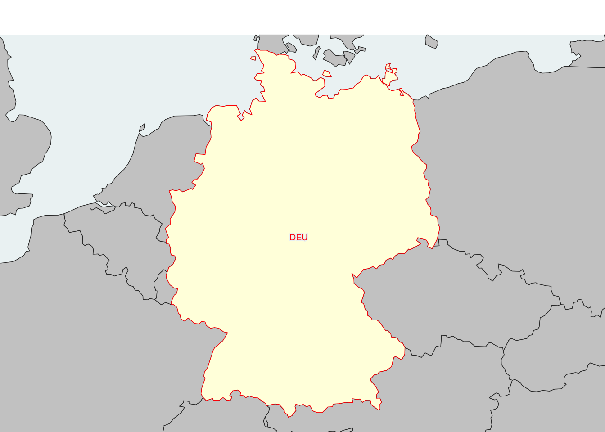
The case of Denmark is a bit more difficult, because we have to decide if Greenland and Faroe islands should be include or not in the territory of the danish state. Both of them are autonomous territories that are more or less remote from the metropolitan area with less population but much more area in the case of Greenland. If we just consider the terrestrial borders, Denmark ha only one neighbor (Germany) and the remote territories does not modify the topology. But the situation will be different if we look at maritim borders with countries like Iceland, Canada, etc.
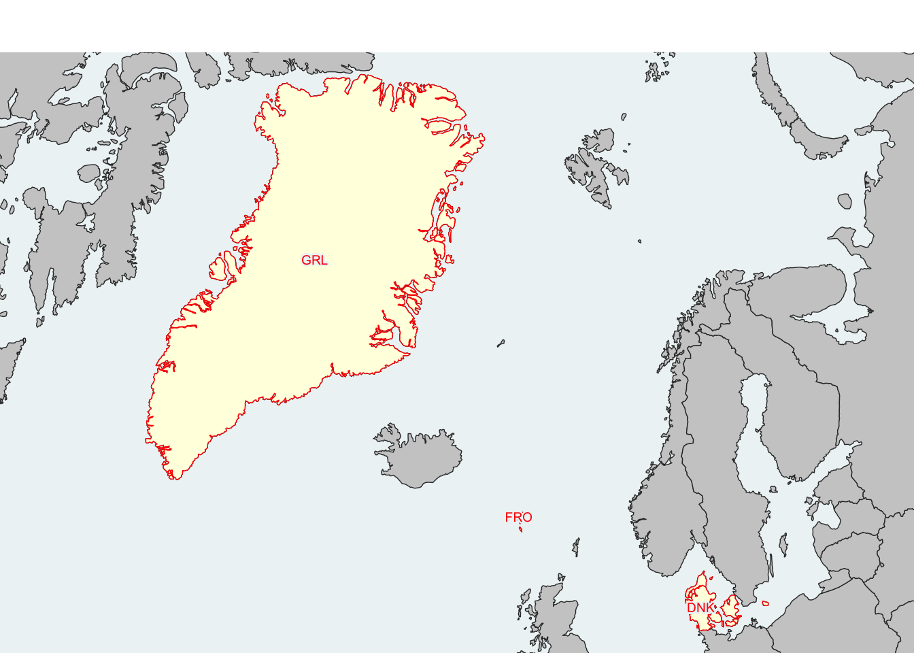
Last but not least, we should also consider the case of Sweden which is separated from Denmark by the sea but directly connected to Denmark by the famous bridge of öresund … But as the bridge is achieved by a tunnel, should we consider that the two countries are still separated by the sea …
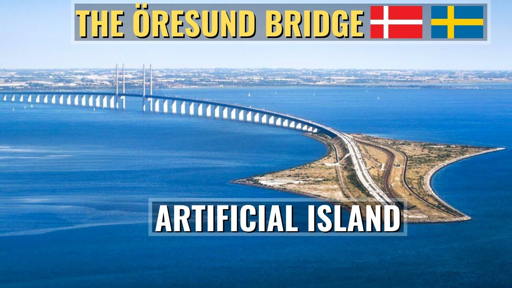
As last example of maximal complexity, we can consider the case of France where we have a lot of rempote territories with a great diversity of political status. Some of them are départements and territoires d’outre mer (DROM) when other are just territoires d’outre mer with different levels of autonomy. Should they be included or not in the list of territories used for the construction of our network ?
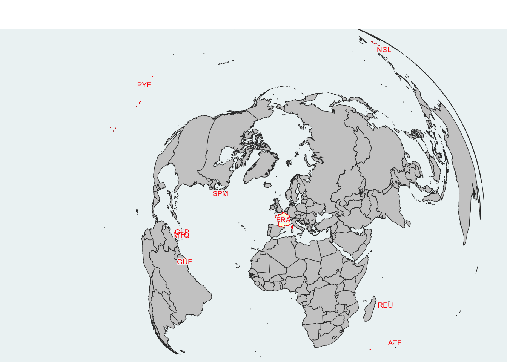
Contrary to Denmark, these remote territories are not only islands and in the case of the territory of Guyane française we have a long terrestrial border with Brazil and Guyana which is also a border of the EU.
We use here the world map proposed by GADM at low level of resolution and adopt a Robinson projection in order to have distances approximatively in km.

We use the getBorders() function from the package cartography elaborated by Nicolas Lambert and Timothee Giraud, engineers at UMS RIATE.
We test firstly the algorithm on a limited sample of countries of 30 countries located in northern and southern shore of the Mediterranea in order to verify the quality of results and the time of computation on 30 countries .
Time difference of 0.3740909 secsThe land borders has been correctly extracted. Spain is not related to Morocco because Ceuta and Melila has been eliminated by the level of spatial resolution.
The following argument is not relevant when using type = 'typo': col.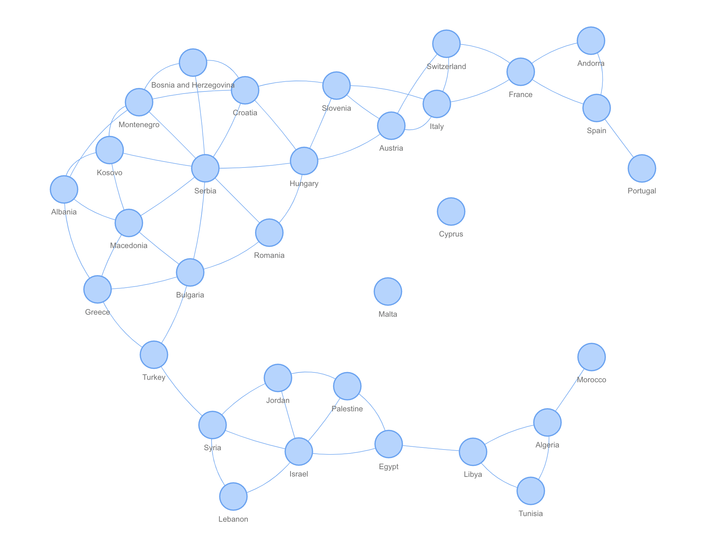
The algortithm elaborated by N. lambert and Timothee Giraud (UMS RIATE) is relatively complex and use two parameters :
According to our experience, good results in reasonable time can be obtained with a maximum distance of 500 km and a grid of resolution 20km.
Malta and Cyprus are no more isolated and are connected to neighbours by maritime borders;
The following argument is not relevant when using type = 'typo': col.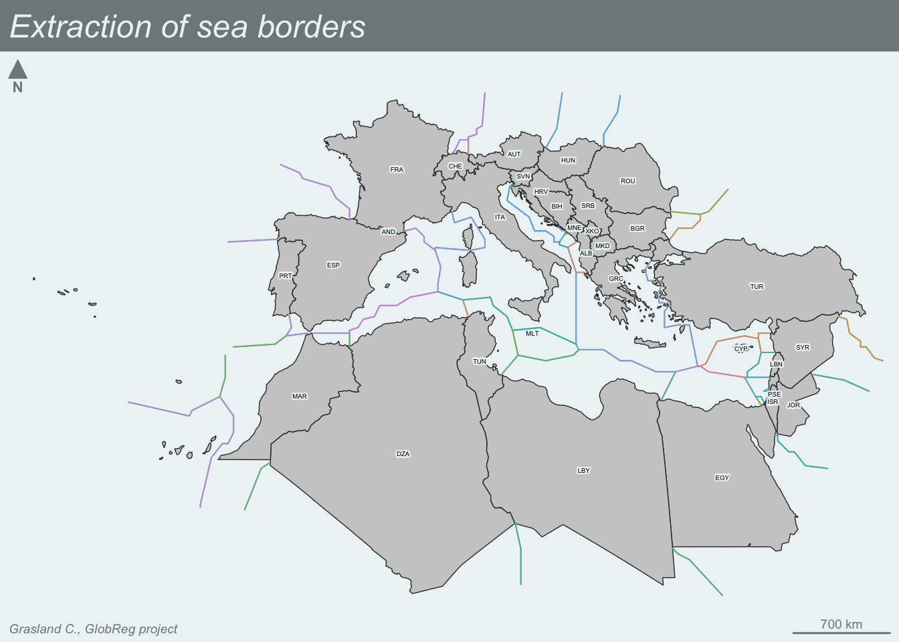
A geopolitical network can be elaborated through the combination of land and sea borders :
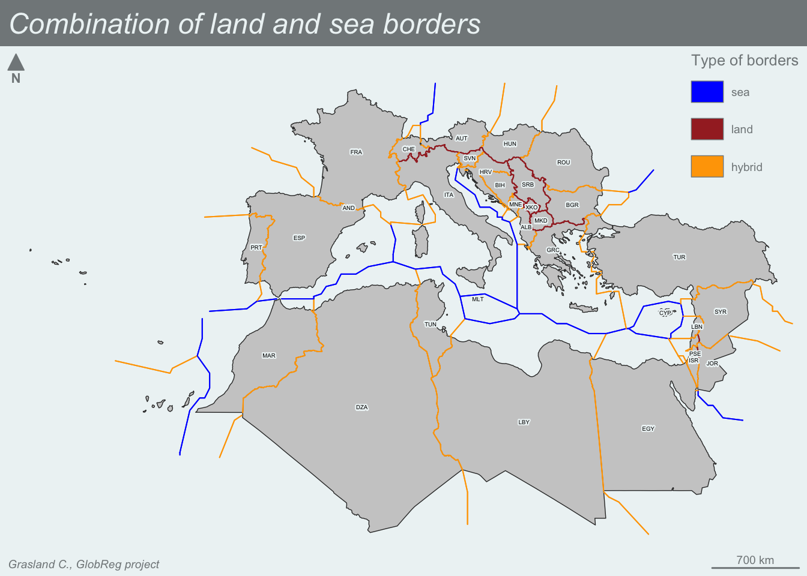

The distance between two states can be measured in different ways. We can use here the interesting work done by CEPII for the analysis of trade flow which suggest as possible solutions :
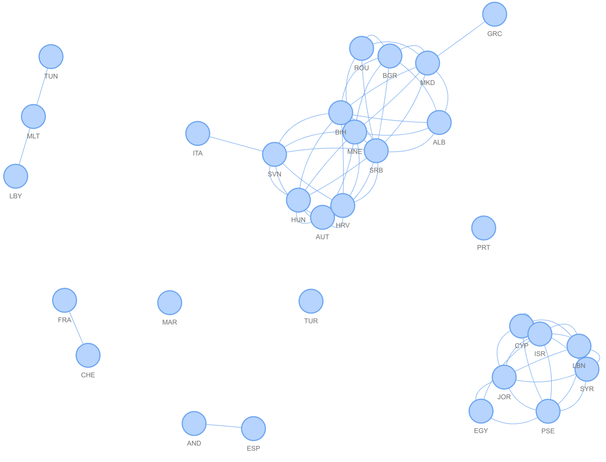
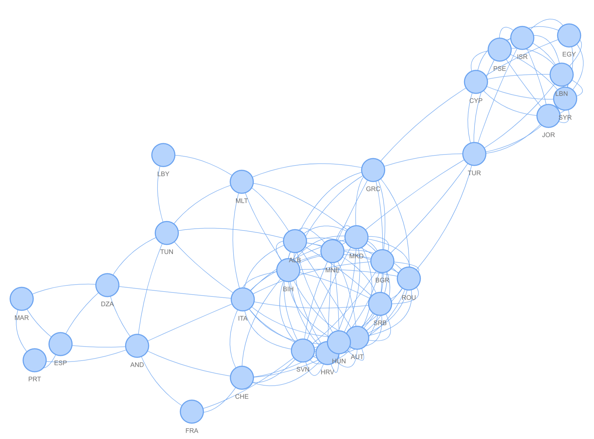
We propose to elaborate a complete network of world countries based on the GADM siplified map that contains 231 geopolitical units (some of them belonging to the same state) We use the land+sea borders as criteria for the definition of edges. The time of computation was 11 minutes for the sea borders with parameters width= 370 km & res 20 km
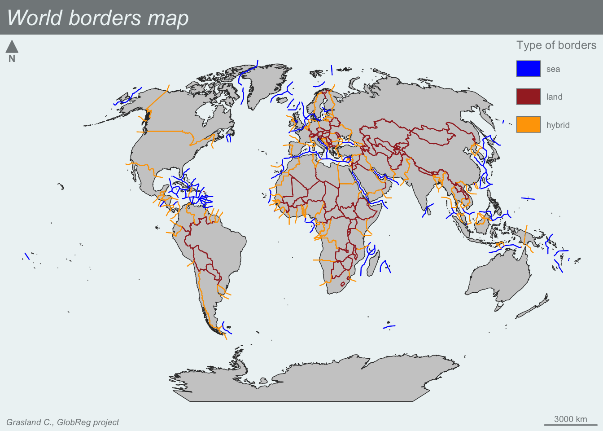
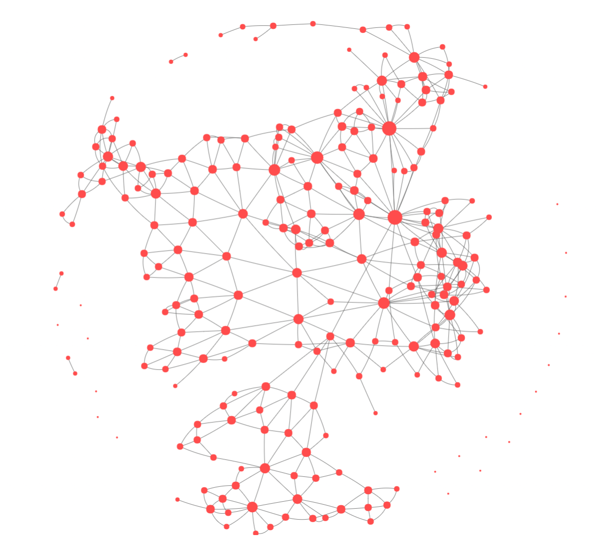
The centrality of countries in this geopolitical network depends from the number of borders they share with other countries (Cf. China, Iran, Russia, …)
But some countries with few links can play a strategig role in the network in terms of betweenness (Cf. USA, Canada, Iceland who connect America with Europe and Asia)
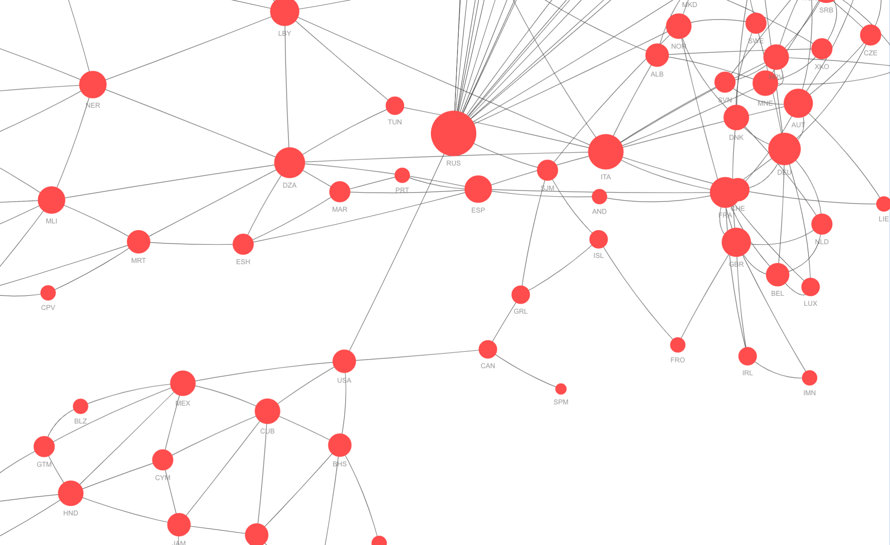
@online{grasland2024,
author = {Grasland, Claude},
title = {Geopolitical Networks},
date = {2024-09-27},
url = {https://worldregio.github.io/en/posts/2024-09-27-geopolitical-networks/},
langid = {en}
}